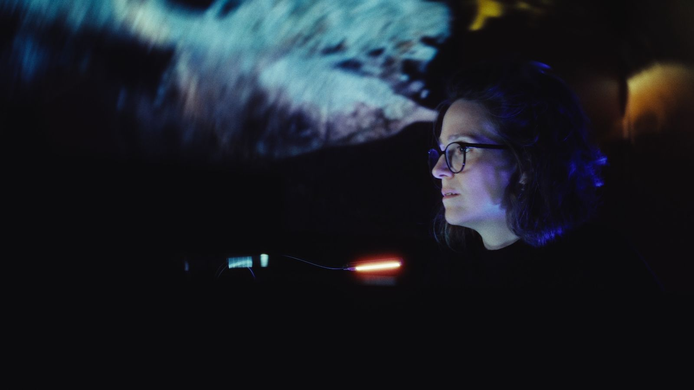

Josefina Urraca
Pianista. Intérprete y directora artística.
Pianista · Nueva York y Asturias
Toco el gran repertorio y estreno obra de compositores vivos, casi siempre en la misma velada. Desde Nueva York reparto el trabajo entre el escenario, la dirección artística y la enseñanza.
-
Proyectos
El trabajo con CreArtBox en Nueva York, el Festival ADAR en la Asturias rural y el estudio de piano de Queens.
Ver los proyectos -
Agenda
Próximas fechas y temporada en curso, entre Nueva York y Asturias.
Ver la agenda -
Trayectoria
Mi formación entre Salamanca, Madrid, París y Nueva York; becas, premios y escenarios.
Ver la trayectoria -
Prensa
Lo que se ha escrito sobre mi manera de tocar y sobre los proyectos que dirijo.
Ver la prensa